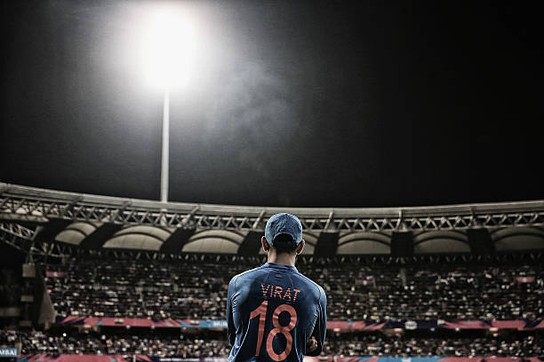

About Virat Kohli
Virat Kohli is an Indian cricketer and former captain of the Indian national team. Known for his aggressive playing style and consistency, he is one of the best batsmen in the world.
Career Highlights
- Debuted in 2008
- Captain of the Indian team from 2013 to 2022
- Over 70 international centuries
Statistics
Matches: 500+
Runs: 20,000+
Average: 50+
Photo Gallery
